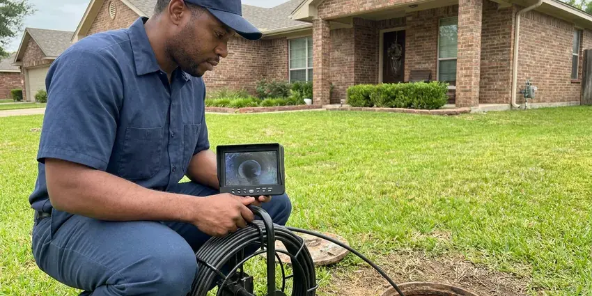

Plumbers for Frozen Pipes in Kaiminani, HI
A frozen pipe can split as it thaws. HKL Plumbing handles thawing and repair in Kaiminani, HI.
- Prevent Burst Pipes
- Thermal Camera Diagnostics
- Licensed & Insured
- Freeze Prevention Measures

Burst Pipe Repair Done Right in Kaiminani, HI.
We thaw the line, check for splits and protect it from the next freeze.
Frozen Pipe Repair in Kaiminani, HI
HKL Plumbing handles frozen pipes in Kaiminani, HI from a slow trickle at the faucet to a split line spraying water. Instead of freeze protection, Hawaii homeowners are better served by watching for leaks, corrosion, and sun damage on exposed outdoor pipes and hoses. When that happens, the lines in attics, crawlspaces and outside walls freeze first because cold air reaches them directly through vents and siding. Thawing is always flame-free.
Work we handle every week:
- Backflow preventer and irrigation freeze damage repair
- Rerouting lines out of exterior walls
- Burst pipe repair and replacement

Additional Plumbing Maintenance Services in Kaiminani, HI
Our maintenance and specialty plumbing services in Kaiminani, HI protect your home year-round and extend the life of every system.


Customers
Why Choose HKL Plumbing for Plumbers for Frozen Pipes in Kaiminani, HI?
We respond quickly because a frozen pipe can burst as it thaws, and that is when the flooding starts. A split half-inch copper line can release several gallons a minute. Arriving before the thaw lets us manage it and fix the split before water reaches the ceiling.
- Freeze Proofing, We insulate, add heat cable or reroute vulnerable lines to prevent the next freeze.
- Flame-Free Thawing, Our heat is safe near framing, insulation and PEX.
- Local Experience, We know how homes in Kaiminani are built and where their pipes tend to freeze.
Citywide Coverage
Homes with crawlspaces around Kaiminani are the most freeze-prone. Vents let cold air in. We cover vents, insulate the rim joist and add heat cable where a line cannot be moved.
Experienced Team
Every HKL Plumbing plumber trains each fall on freeze response. The thawing gear gets checked. Gear gets checked, fittings restocked, and damage control procedures reviewed.
Safety-First Approach
Gas water heaters and furnaces near a burst line can be affected by water. Wet burners are dangerous. A gas control that sat under water must be replaced, and the appliance checked before it runs.
Trusted Certified Kaiminani Plumbing Services Professionals
At HKL Plumbing, we take pride in licensed, certified plumbing services throughout Kaiminani, HI. Those papers on the wall mean something. Every repair, install and maintenance visit follows strict safety and quality rules, and the plumbers doing the work carry recognized industry credentials.
Call Us Now PHCC Plumbing Contractor Recognition
PHCC Plumbing Contractor Recognition Better Business Bureau (BBB) Accreditation
Better Business Bureau (BBB) Accreditation Angi Certified Pro
Angi Certified Pro ISO 9001 Quality Management Certification
ISO 9001 Quality Management CertificationFrozen Pipe Services in Kaiminani, HI
Preventive Pipe Insulation in Kaiminani
Foam pipe insulation costs little and prevents most freezes in attics and crawlspaces. It has to fit. Seams get taped and corners get mitered, because one bare fitting is often where the freeze starts.

Commercial Frozen Pipe Solutions in Kaiminani, HI
Businesses with unheated loading docks, warehouses or vacant suites are at the highest freeze risk. Fire sprinkler lines are a big concern. We thaw and repair domestic water lines, add heat cable to exposed runs, and coordinate with your fire sprinkler contractor when a dry or wet system in a cold space needs attention.
Preventive Pipe Winterization in Kaiminani
Winterizing before the first hard freeze costs far less than a burst pipe repair. Every exposed line gets marked. Attic lines get foam insulation, crawlspace vents get closed or covered, outdoor faucets get swapped for frost-free models, and irrigation lines get drained or blown out before the cold arrives.
Heat Cable for Exposed Pipes in Kaiminani
Some pipes cannot be rerouted or insulated enough on their own, like a supply line under a manufactured home or a pipe through an unheated porch. Heat cable handles those. Old-style constant-wattage heat tape can overheat and is a known fire risk, so we install self-regulating cable listed for the pipe material and replace worn or brittle heat tape we find.
Burst Pipe Repair and Restoration in Kaiminani, HI
A burst pipe soaks drywall, insulation and flooring fast. Stopping the water and fixing the pipe come first. Once the line is fixed and tested, we can refer a water mitigation company to dry the space, and we leave you photos and an invoice describing the repair for your insurance claim.
Outdoor Faucet and Sprinkler Line Freezing in Kaiminani, HI
Outdoor plumbing is the first to freeze, especially a hose bib with the hose left on. A connected hose holds water in the stem. Irrigation backflow preventers sit above ground with no insulation, and their brass bodies and test cocks crack easily, so we drain or cover them before the first freeze and repair them when they split.
Emergency Burst Pipe Repair in Kaiminani, HI
Water spraying from a wall or ceiling means a pipe has split. Close the main shutoff right away. We replace the split section and test the whole branch, since a freeze often cracks more than one spot.

Frozen Pipe Repair Cost Comparison in Kaiminani, HI
Thawing an accessible frozen pipe usually costs $150 to $400. Repairing a split costs more. Burst repairs run $300 to $1,000 depending on access, and prevention work usually costs a few hundred.
Plumbers for Frozen Pipes Near Me in Kaiminani, HI
Our crews cover all of Kaiminani and nearby towns during freeze events. Active leaks go first. Bursts go first, and frozen lines with no leak get clear instructions until we arrive.
Fast local response counts most on the first cold night. Pipes often burst during the thaw. A plumber on site during the thaw can catch a split the moment it starts leaking.
HKL Plumbing at a Glance
- Fully licensed plumbing team covering Kaiminani, HI
- Same-day appointments and 24/7 emergency response
- Clear written estimates, no hidden fees
- 4.8-star rated by 529+ Hawaii customers
Kaiminani Map
Kaiminani Information
- Population
- 12,590
- Area codes
- Local
- Service area
- Kaiminani and towns within a 40 mile drive
- Nearby
- Hilo, Hawaiian Paradise Park, Kihei, Kahului
Water lines in attics, exterior walls and garages freeze before anything else. A lot of Hawaii housing dates from the postwar decades, including single-wall construction where pipes run through tight, cramped spaces. Those spots get checked first.
Expert Services
Reach out to HKL Plumbing for honest, reliable plumbing from people who know the trade in Kaiminani, HI.
Our Specialized Plumbing Services in Kaiminani, HI
At HKL Plumbing, we handle the full list of plumbing services across Kaiminani, HI. From leak detection to full system installs, our team works fast and charges fair prices on homes and commercial properties alike. Explore our core services below:


How Our Frozen Pipe Service Works in Kaiminani, HI
HKL Plumbing follows the same steps for every frozen line.
Request a Quote
Call (808) 649-6718 and tell us which fixtures have no water and whether you see any leaks. We schedule the next truck.
Locate and Thaw
We use thermal imaging to find the frozen section and thaw it without open flame.
Test and Protect
We pressure test the line and repair any splits. Exposed runs get insulation or heat cable.
Frequently Asked Questions About Plumbers for Frozen Pipes in Kaiminani
Thawing alone usually runs a couple hundred dollars. Night and weekend calls cost more. The price depends on how hard the frozen section is to reach, how long it takes to thaw, and whether the line needs repair once it is flowing again, which we quote before starting that part.
Disconnect hoses, cover outdoor faucets and backflow preventers, and let a faucet drip on very cold nights. Open sink cabinets on outside walls. Away from home in cold weather, keep the heat at 55 or higher or shut off and drain the lines.
Instead of freeze protection, Hawaii homeowners are better served by watching for leaks, corrosion, and sun damage on exposed outdoor pipes and hoses. Pipes can freeze anywhere temperatures fall below freezing for several hours, especially when wind hits an exposed wall. Homes built for mild weather often have less pipe insulation. Cold snaps catch people off guard.
Most homes have water back within one to two hours of our arrival. A split pipe adds time. If the line split, we keep the water off to that branch while we cut out the damaged section and replace it, and in many cases we can isolate that branch so the rest of the house has water during the repair.
It can, though it is not common. Soil under a slab usually stays above freezing. The risk is where the line comes up out of the slab at an outside wall, and if that riser freezes and cracks, water can run down along the pipe and under the floor, which we find with acoustic and thermal tools.
Keep cold air away from the pipe. Seal and insulate around exposed lines. Close crawlspace vents for the season, insulate attic and garage runs, swap old hose bibs for frost-free models, and add self-regulating heat cable on any run that still gets too cold despite insulation.
A frost-free hose bib has a long stem that shuts off water inside the warm part of the wall. The outside part drains when you close it. It only works if the hose is disconnected, because a connected hose traps water in the stem where it can freeze and split the valve inside the wall, which you may not notice until spring.
Shut off the main water valve right away. Turn off power or gas to the water heater next. Move belongings, drain the lines from a low faucet, and call us for the repair.
What People Are Saying About Our Plumbing Experts?

Emily R.
The shutoff valve under our kitchen sink snapped off in my hand on a Sunday morning. HKL Plumbing had someone out by early afternoon. He replaced both angle stops with quarter turn valves and showed me where our main shutoff was, which I honestly did not know.
Plumbing Repair · Kahului, HI
Kevin O.
Before buying our house I paid for a sewer camera inspection. HKL Plumbing found a belly in the line that held standing water about forty feet from the cleanout. We used the video to get the sellers to fix it before closing.
Sewer Camera Inspection · Kahului, HI
Tyler J.
We bought a taller comfort height toilet for my dad, who just had knee surgery. The plumber pulled the old one, found the flange was cracked, and replaced it before setting the new bowl. Took about two hours.
Toilet Installation · Lahaina, HI
Laura S.
Our 40 gallon tank started leaking from the bottom after thirteen years. The tech hauled the old one out, set a new unit with a fresh expansion tank, and had hot water running in about four hours. He took the old tank with him too.
Water Heater Replacement · Kaiminani, HICarlos V.
Our house still had galvanized pipe, and upstairs the shower was a trickle. The crew repiped everything in PEX over three days and patched every drywall hole before they left. The pressure difference is night and day.
Repiping · Kaiminani, HI
Angela D.
Our sump pump quit during a storm and the water was an inch from the basement carpet. HKL Plumbing put in a new pump with a battery backup that same evening. We have had two heavy rains since. It kicked on both times.
Sump Pump · Lahaina, HI